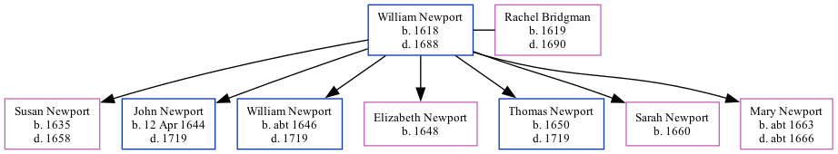

William Newport, the 8 times great-grandfather of Nigel Horne, was born in Petham, Kent, England in 1618 and married Rachel Bridgman (with whom he had 7 children: Susan, John, William, Elizabeth, Thomas, Sarah and Mary) in St Mildreds, Canterbury, Kent, England on Jan 25, 16431.
Public Member Trees Online publication - Provo, UT, USA: The Generations Network, Inc., 2006.Original data - Family trees submitted by Ancestry members.Original data: Family trees submitted by Ancestry members.
Family Tree

Map
Generated by Ged2Site. Last updated on Jul 20, 2025